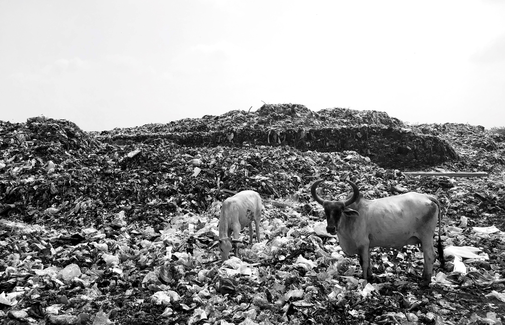
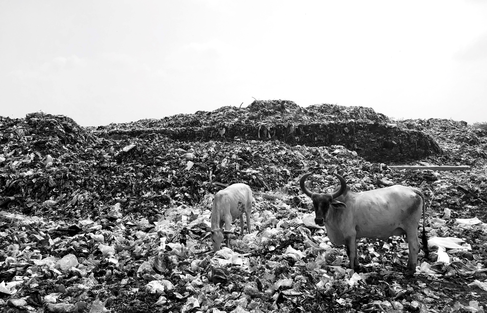

Overview
Weather is the state of the atmosphere—its temperature, humidity, wind, rainfall and so on—over hours to weeks. It is influenced by the oceans, land surfaces and ice sheets, which together with the atmosphere form what is called the ‘climate system’. Climate, in its broadest sense, is the statistical description of the state of the climate system.
Climate change is a change in the statistical properties of the climate system that persists for several decades or longer—usually at least 30 years. These statistical properties include averages, variability and extremes. Climate change may be due to natural processes, such as changes in the Sun’s radiation, volcanoes or internal variability in the climate system, or due to human influences such as changes in the composition of the atmosphere or land use.
Weather can be forecast with considerable skill up to about a week in advance. Short term fluctuations in climate, such as droughts, can be predicted with limited skill from season to season. In contrast, changes in the long-term statistics of the climate system (climate change) can be predicted if caused by long-term influences that are known or predictable.
Energy from the Sun is the ultimate driver of climate on Earth. The solar energy received by Earth depends on how much the Sun emits and the distance between Earth and the Sun. Part of this sunlight is reflected directly back to space by the atmosphere, clouds, and land, ice and water surfaces. Aerosols (tiny particles in the atmosphere, some coming from human activities) can increase the reflection of sunlight.
Human activities can also influence climate by changing concentrations of CO2 and other greenhouse gases in the atmosphere, altering the concentrations of aerosols and altering the reflectivity of Earth’s surface by changing land cover.
There are close connections between temperature, atmospheric water vapour, the extent of polar ice sheets and the concentrations of long-lived greenhouse gases (especially CO2) in the atmosphere.
When one of these is disturbed, the others react through ‘feedback’ processes that may amplify or dampen the original disturbance. These feedbacks occur on a wide range of time scales: those involving the atmosphere are typically rapid, while those involving deep oceans and ice sheets are slow and can cause delayed responses.

 
